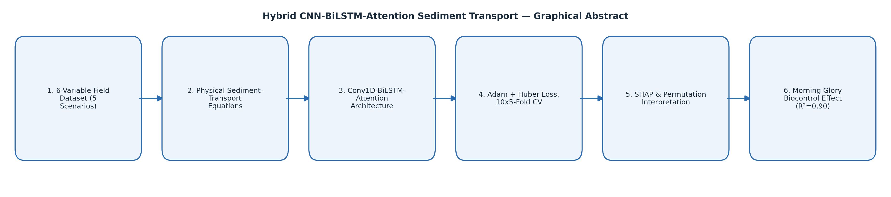

Hybrid CNN-BiLSTM-Attention Sediment Transport
Hold-out R² = 0.90 (RMSE = 0.45 kg/s/m)
Graphical abstract

Process simulation
Naziru explains this step
Ask a question about this work
Send Naziru a question directly — it opens as an email you can send from your own inbox.
Opens your email app with the message pre-filled. Nothing is sent until you press send there.